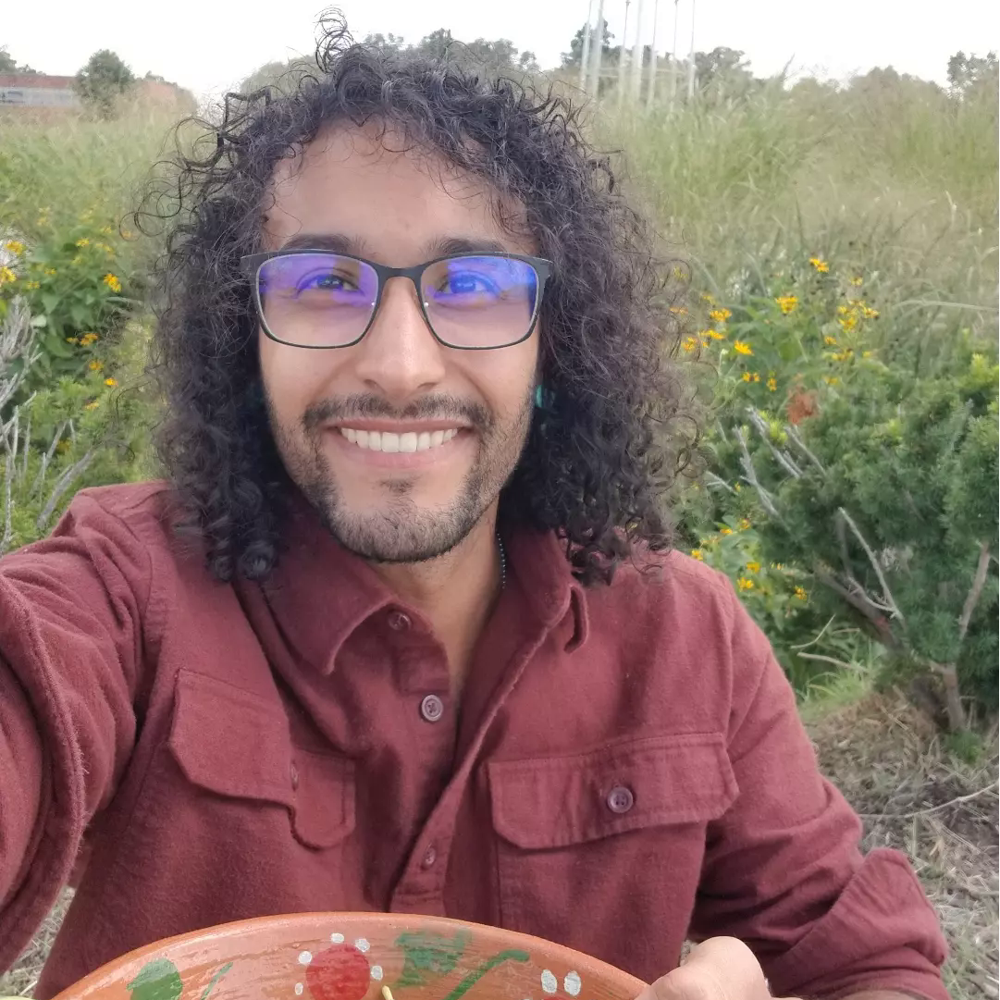

I'm a software engineer trying to do some good in the world. I love creating things - mostly through design and programming, but I also enjoy more traditional mediums like visual art. I'm almost always either making something or learning something new. Recently I've been doing more hands-on hardware and ecological projects, like modifying my own furniture and rewilding my yard with native plants.
I graduated from the University of Maryland in December of 2020. It had come after various other accomplishments throughout high school and college - including congressional awards, helping with cancer research at a bioinformatics lab, starting a YouTube channel, working for various startups, and eventually launching my own company. I don't do as much these days, but I still save time for projects. Normally I would start projects for projects' sake, but recently I've been keeping focused on a handful of more impactful ideas. I don't want to develop and promote anything unless I know it will help someone and make a real difference. My last major project was developed to promote sustainable agriculture and I presented it at the 2024 EcoSummit in Zhengzhou, China.
This is my first 3D game, which I would describe as a cross between Civilization and Pokémon. It's a strategy game where you recruit unique characters into your army and face off against rival kingdoms. Outmaneuver these rivals to restore balance to the land of T'ahn! You can keep up with development of this game on my YouTube channel and itch.io page.